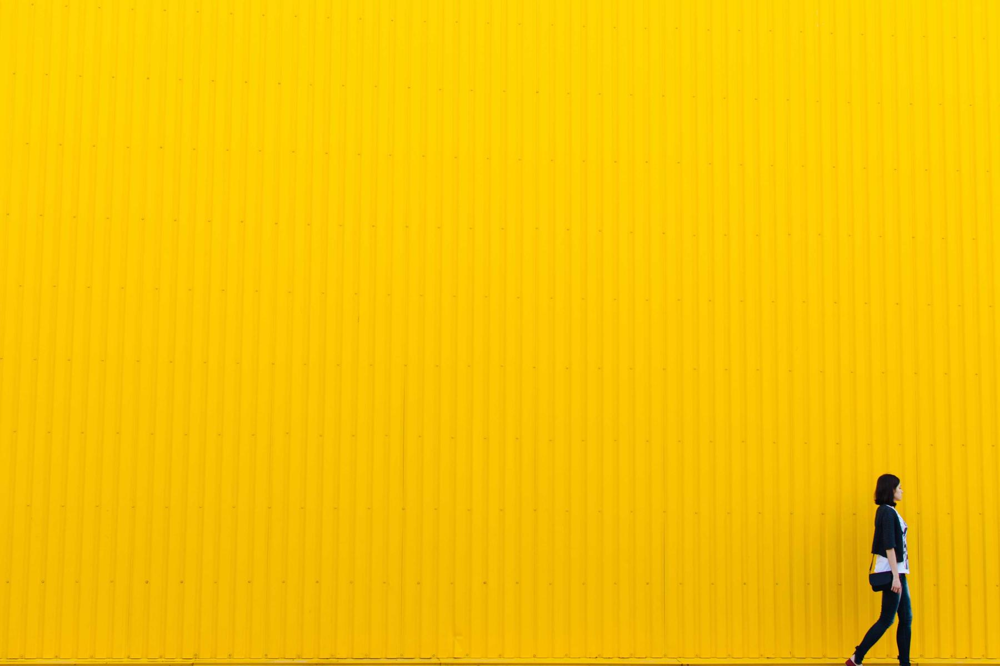

Offset and letterpress printing for small runs
Books, posters, packaging and stationery from 50 copies, printed in our own shop in Rotterdam and shipped within ten days.

Posters that hold up outdoors. Printed on 200 g stock.
Offset on heavy coated paper with a matt varnish, so a poster keeps its colour through a season on a wall. From 50 copies, A2 to A0.
SizesA2, A1, A0 and 70 × 100 cm
From€180 for 50 A2 posters
DeliveryWithin ten working days

One quote, one price. No surprises on the invoice.
Send the file and the quantity; you get a price, a proof and a delivery date back within a working day.
How a quote works